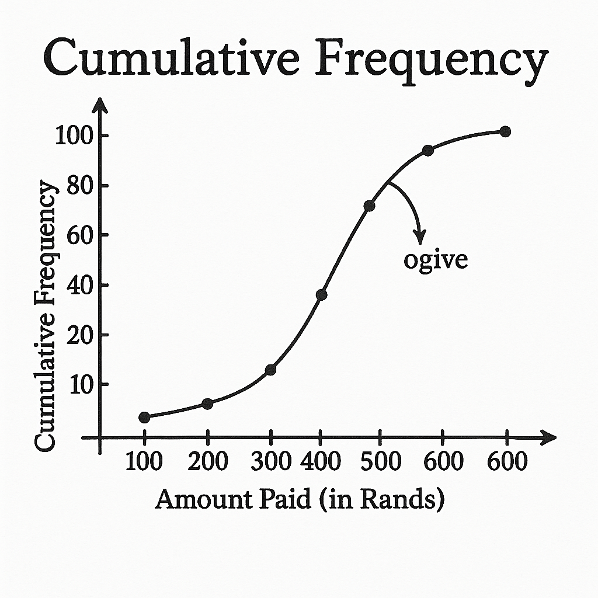

Mathematics Paper 2 – Study Scope
This scope provides practice questions similar to the final exam, with diagrams and solutions.
1. Statistics
Practice Question: The masses (in kg) of 12 athletes are:
72, 80, 85, 87, 90, 92, 93, 95, 100, 104, 110, 118
1.1 Calculate the mean mass.
1.2 Calculate the standard deviation.
1.3 Determine how many athletes fall more than one SD below the mean.
2. Ogive & Cumulative Frequency
Practice Question:
Monthly data expenses (in Rands) of 100 users are grouped as follows:
0–100 (12), 101–200 (20), 201–300 (25), 301–400 (18), 401–500 (15), 501–600 (10)
Draw an ogive. Estimate: (a) Median, (b) Q1 and Q3, (c) IQR.
3. Analytical Geometry
Given A(2,3), B(8,3), C(10,10), D(0,10):
3.1 Calculate AC in simplest surd form.
3.2 Determine the gradient of AC.
3.3 Find the equation of AC.
3.4 Prove AB = CD.
3.5 Determine the coordinates of intersection of diagonals.

4. Trigonometry
Practice Question:
Simplify:
(a) sinθ cosθ + cos²θ tanθ
(b) Prove: (1 − cosθ) / sinθ = sinθ / (1 + cosθ)
5. Euclidean Geometry
Circle with centre O. A, B, C lie on circumference. AB = AC.
5.1 Prove ∠ABC = ∠BCA.
5.2 If AD is a tangent, determine ∠DAC.